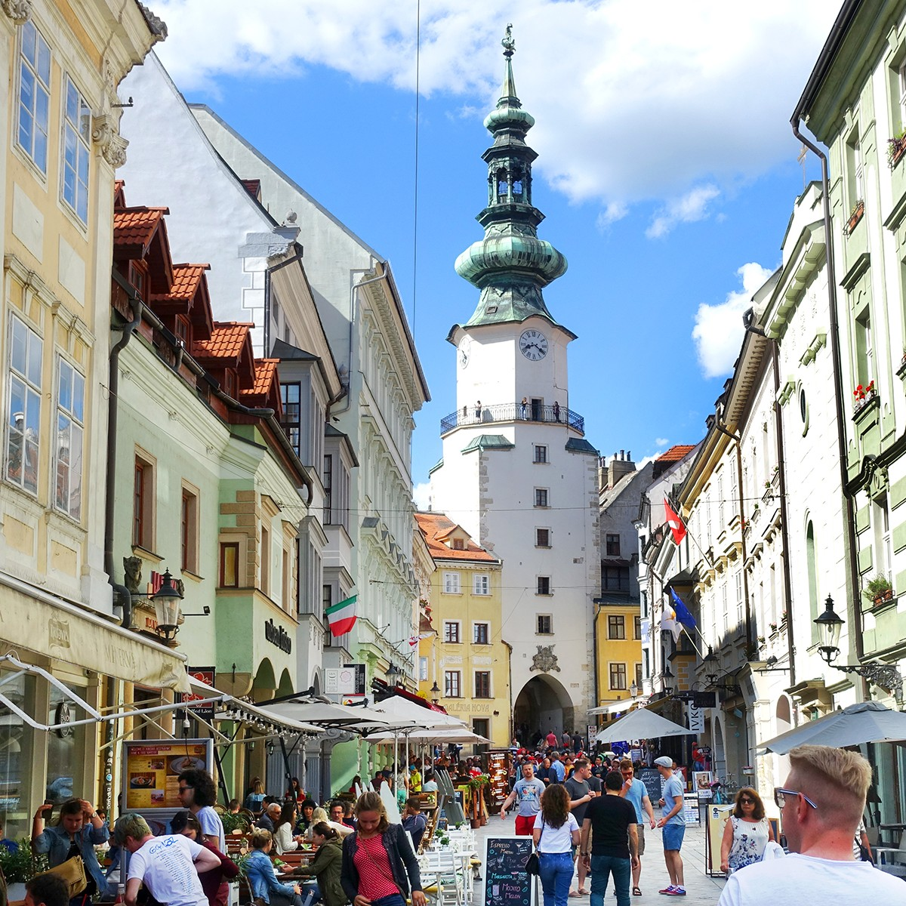
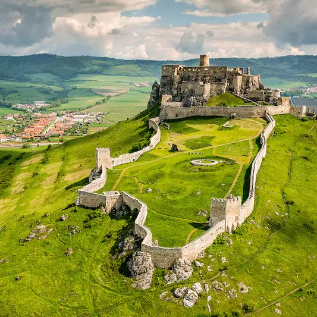

Slovakia
Exploring Slovakia's Natural Wonders, Rich Heritage, and Charming Villages
Slovakia, a landlocked country bordered by Poland, Ukraine, Hungary, Austria, and the Czech Republic, is often overshadowed by its neighboring European giants. But what it lacks in size, it more than makes up for in natural beauty and cultural richness. As I touched down in the capital city, Bratislava, I felt a sense of anticipation for the adventures that awaited me in this less-explored corner of Europe.
 My journey began in Bratislava, a city where history seamlessly blends with the modern world. Strolling through the Old Town, I marveled at the well-preserved medieval buildings, including the iconic Bratislava Castle overlooking the Danube River. One evening, I embarked on a twilight river cruise, savoring the city's illuminated skyline. The city's vibrant culinary scene also left a lasting impression, with hearty dishes like bryndzové halušky (potato dumplings with sheep cheese) and crisp Slovak wines.
From Bratislava, I ventured east towards the High Tatras, a mountain range that forms a natural border with Poland. Hikers and nature lovers, take note—this is your paradise! I explored hiking trails around Štrbské Pleso, a picturesque glacial lake, and reveled in the pristine Alpine landscapes. One particularly memorable trek led me to Rysy, the highest peak in Slovakia. The panoramic views from the summit, shared with both Slovak and Polish hikers, left me in awe of Mother Nature's artistry.
Spiš Castle, a UNESCO World Heritage site and one of the largest castles in Europe, beckoned me to explore its ruins. This medieval marvel perched atop a hill offered a journey back in time. As I wandered through the intricate stonework and labyrinthine corridors, I could almost hear the echoes of centuries past. From the castle's heights, the surrounding countryside stretched as far as the eye could see, revealing the breathtaking beauty of the Spiš region.
 Banská Štiavnica, an ancient mining town nestled among the Štiavnica Hills, was my next destination. This picturesque town, with its well-preserved historic center, captivated me instantly. I explored the Mining Museum and ventured into the depths of the Salamander Mine, gaining insights into the town's silver mining heritage. As evening descended, I found myself sipping coffee in one of the town's charming cafés, surrounded by beautifully restored Renaissance-era buildings.
The Dobšinská Ice Cave, another UNESCO gem, offered a unique underground adventure. Equipped with warm clothing and guided by a park ranger, I descended into the cave's chilly depths. Inside, I marveled at the dazzling ice formations that seemed to shimmer like crystal. The subterranean world, with its surreal ice sculptures and eerie silence, transported me to another realm, and I couldn't help but feel like an explorer of old.
Košice, Slovakia's second-largest city, charmed me with its vibrant atmosphere and historic treasures. St. Elisabeth Cathedral, a stunning example of Gothic architecture, was a highlight. Its soaring spires dominate the city's skyline. I also explored the city's many museums, including the Eastern Slovak Museum, which provided a deep dive into the region's culture and history.
My journey through Slovakia was a revelation of Europe's hidden gems. From the High Tatras' majestic peaks to the enchanting streets of historic towns, this country offers a tapestry of experiences that any traveler would cherish. I hope this adventure has ignited your curiosity about Slovakia, encouraging you to explore its natural wonders, rich heritage, and charming villages for yourself. As I bid farewell to this lesser-known European gem, I'm reminded that the world is full of delightful surprises waiting to be discovered. Until our next journey, my fellow explorers!